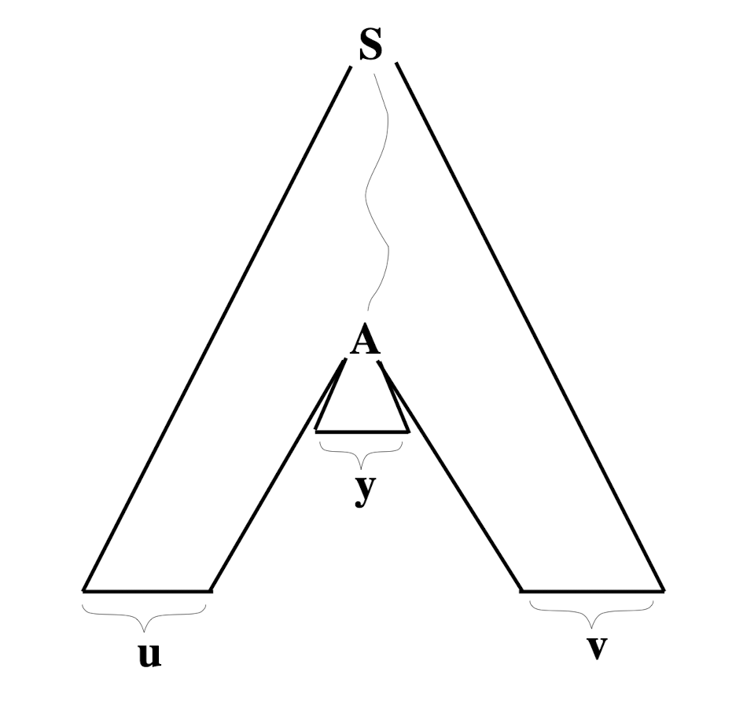
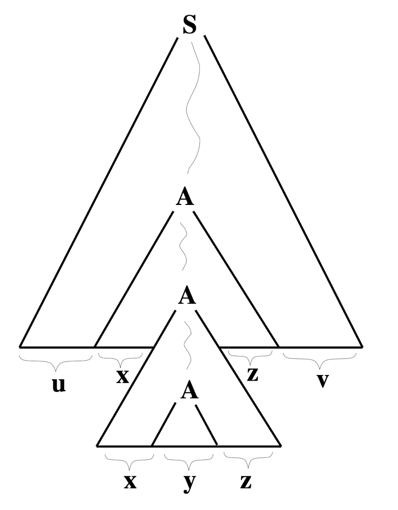
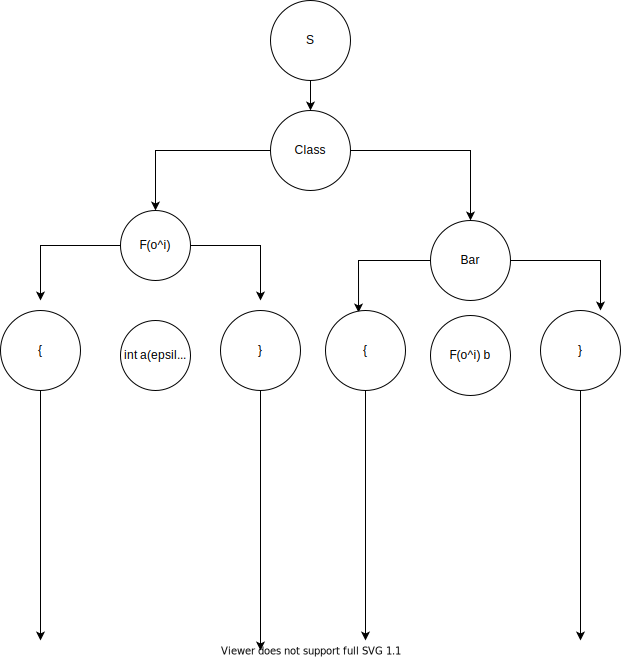

class: center, middle # Pumping Lemma for Context-Free Languages Chris Tcherkezian & Deric Kwok --- # Review - Suppose that the language $ L $ is a context-free language. - There exist an integer $ K $ such that any string $ w \in L $ with $ |w| \geq K $: - The string $ w $ can be broken up to 5 substrings. - $ w = u \cdot x \cdot y \cdot z \cdot v $ where - $ | x \cdot y \cdot z | < K $ - $ | x \cdot z | > 0 $ - $ u \cdot x^n \cdot y \cdot z^n \cdot v \in L $ for **every** possible $n$ - Keep in mind that: - If $ L $ is context-free than $ L $ satisfies the pumping lemma. - If $ L $ satisfies the pumping lemma that doesn't mean $ L $ is context-free. - If $ L $ doesn't satisfy the pumping lemma then $ L $ is not context-free. --- # Parse Tree - Why is the pumping lemma broken down to 5 substrings? $ S \to uAv $ $ A \to xAz $ $ A \to y $ <center> </center> --- # Parse Tree $ S \to uAv $ $ A \to xAz $ $ A \to y $ <div style="display: flex; justify-content: center;"> <div> <div> uxyz </div>  </div> <div> <div> uxxyzzv </div>  </div> </div> --- # Our Problem Consider a simplifed version of Java. A program consists only of a list of class declaration that have attributes: - Show that this language is not context-free using the pumping lemma for context-free languages. ```java class Foo { int a; } class Bar { Foo b; } ``` - There's no methods, packages, imports, access control or anything else; just these class delarations. - Only programs consisting of delcaration where each attribute and methods parameter has a valid type are valid words in this language. - Can be int, void or any class that declared in the program. --- # Parse Tree <center>  </center> --- # Approaching the Problem - We're going to assume that Java Declaration $ L $ is context-free language. - There must exists a pumping constant $ K $ for $ L $. Word: ```java // An class declaration class Foo { int a; // This attribute isn't necessary; the class can be empty. } // Bar calling the class(es). class Bar { Foo b; // The class `Foo` being called; an attribute. } ``` --- # Splitting - We were also provided a hint to the problem. - "You need a word with length at least K, but it could also be a much longer word, e.g. one that declares K classes, each of which has a different name, which may grow arbitrarily long, and another class that has an attribute of each of those types." - How are we going to split this word into 5 parts? - More importantly, what should $ x $ and $ z $? <center> <h2> $ w = u \cdot x^i \cdot y \cdot z^i \cdot v $ </h2> </center> ```java class Foo { int a; } class Bar { Foo b; } ``` --- # Splitting <center> <h2> $ w = u \cdot x^i \cdot y \cdot z^i \cdot v $ </h2> </center> ```java class Fo { int a; } class Bar { Fo b; } ``` $ u \to \epsilon $ $ x \to $ class F(o)$ ^i $ { } $ y \to $ class Bar { $ z \to $ F(o)$ ^i $ b$^i $; $ v \to $ } --- # Let's Pump i = 1, K = 2 $ w = u \cdot x \cdot y \cdot z \cdot v $ ```java class Fo { int a; } class Bar { Fo b; } ``` --- # Let's Pump i = 2, K = 2 $ w = u \cdot x^2 \cdot y \cdot z^2 \cdot v $ ```java class Fo { int a; } class Foo { int a; } class Bar { Fo b; Foo bb; } ``` Since, $ x \to $ class F(o)$^i $ $ y \to $ class Bar { $ z \to $ F(o)$^i $ b$^i $ $ | xyz | \geq K $, therefore in a context-free language can't "store" classes names since it can arbitrarily longer than K. --- # Contradiction - We assumed that Java Declaration was a context-free language. - We discover that the pumping lemma doesn't hold for this language. - Therefore, Java Declaration is not context-free. --- class: center, middle <img src="https://alchetron.com/cdn/java-man-630b6a21-3f5e-4d1f-bfae-7b67e581e55-resize-750.jpeg"> <br> <small style="font-size: 7pt"> java man [image from alchetron.com] </small> <h1> Any Questions? </h1>